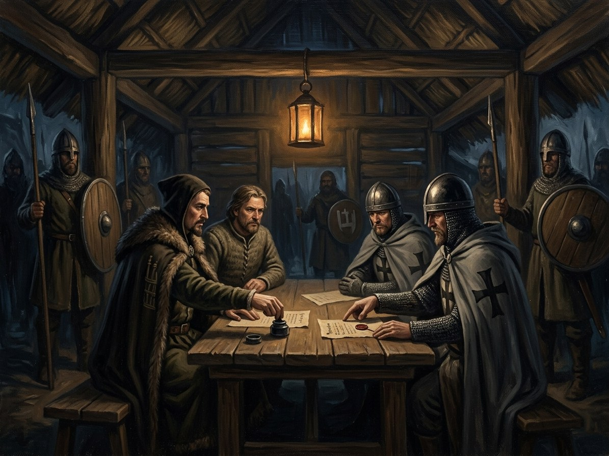

Treaty of Dovydiškės¶
What the chronicles say [Historical record]¶
A secret treaty of 31 May 1380 between Jogaila and Grand Master Winrich von Kniprode, directed against Kęstutis. The clauses are convoluted: the two sides promised not to attack each other, and Jogaila promised not to help Kęstutis or his children against the Order; helping in a way that avoided suspicion would not breach the treaty. Its purpose was Teutonic neutrality in Jogaila’s struggle with his rivals. The Order covered the signing with a five-day hunt. The place name appears only in Wigand of Marburg and in German texts, and the village is not securely identified (Wikipedia; VLE, Dovydiškių sutartis). In August 1381 the Order told Kęstutis of the treaty. The informant is Kuno von Liebenstein, komtur of Osterode and godfather of Danutė (Ivinskis 1978, via the English Wikipedia; VLE and Wigand name no one). The saga’s Günther von Hohenstein is not the informant: he is an invented young brother of Book VI (the real Günther von Hohenstein of Osterode died in 1380). Vytautas, asked for advice, said no such treaty existed.
Treaty of Dovydiškės

Treaty of Dovydiškės · event¶
Tipas |
įvykis |
Metai |
1380-05-31 |
Status |
Istoriniai duomenys |
Knyga |
|
Pastaba |
The Order’s informant to Kęstutis in Aug 1381: Kuno von Liebenstein (not Hohenstein). |
What really happened [The saga’s invention]¶
It is the first crack in the Silent Pact: a Gediminid plotting against Gediminid blood. Henė takes his first thread of Jogaila here. The saga leaves the place unidentified, in the border country, which the record’s silence permits.
Consequences¶
Leads to Kęstutis’s seizure of Vilnius in autumn 1381 and so, through the retaking of Vilnius and the arrest, to the death at Krėva. Jogaila’s accession is Algirdas’s death three years earlier.
Dramatisation¶
Not dramatised. Book I ch. 1 „Senasis Šernas“ (Kęstutis, Trakai, late summer 1382) and ch. 2 „Vilko Perspėjimas“ (Vytautas, the same evening, arguing with his father and showing the Dovydiškės parchment, „1380-ieji“) carry the backstory. It is mentioned again in ch. 4 and 8.
Ryšiai
Causes: Kęstutis takes Vilnius; Jogaila caught on his way back
Location: Dovydiškės (unidentified) — Village not securely identified.
Participants: Jogaila · Kuno von Liebenstein — Informs Kęstutis of the treaty, Aug 1381. · Winrich von Kniprode
Sąsajos¶
graph LR
dovydiskes["Dovydiškės (unidentified)"]
ev_coup_1381["Kęstutis takes Vilnius; Jogaila caught on his way back"]
ev_dovydiskes["Treaty of Dovydiškės"]
jogaila["Jogaila"]
kniprode["Winrich von Kniprode"]
liebenstein["Kuno von Liebenstein"]
ev_dovydiskes -->|Causes| ev_coup_1381
ev_dovydiskes -->|Location| dovydiskes
jogaila -->|Took part in| ev_dovydiskes
kniprode -->|Took part in| ev_dovydiskes
liebenstein -->|Took part in| ev_dovydiskes
style ev_dovydiskes stroke-width:3px